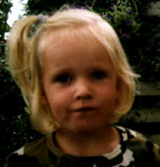

|
Anthonie Obik (Tony) van de Velde |
||
| Kind van: | Nel Vermeij en Jan van de Velde | |
| Geboren op: | 30/01/1960 | |
| te: | Dubbeldam | |
| Getrouwd met: | Johanna Anthonia (Anja) Muusers (07/07/1969, Leidschendam) | |
| op: | 07/07/1994 | |
| te: | Heemstede | |
| Kinderen | ||
| Naam: | Geboortedatum, -plaats: | |
| Niene Gerdina (Niene) | 21/01/1996, Haarlem |
 |
|
Foto's |
||